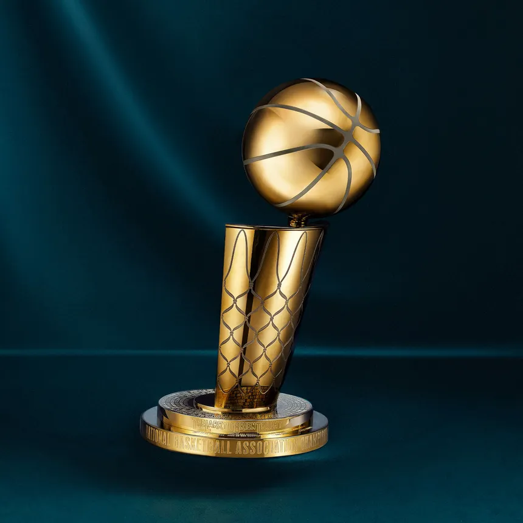
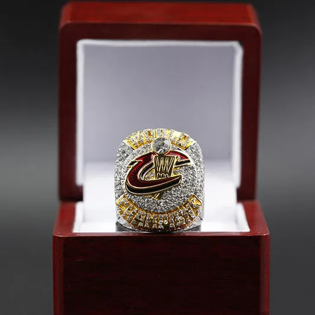

A logó
A ligát New Yorkban alapították 1946. június 6-án Basketball Association of America (Amerikai Kosárlabda Szövetség) néven. Jelenlegi nevét a rivális National Basketball League-gel (Nemzeti Kosárlabda Liga) való egyesülés után kapta. A liga nemzetközi és belső hivatalait a New York-i központból irányítják. Az NBA a USA Basketball (USAB) tagja, amelyet elismer a FIBA, mint az Egyesült Államok kosárlabda-szövetsége.
Az NBA egy-egy idénye két részből áll, az alapszakaszból és a rájátszásból. Az alapszakaszban minden csapat 82 mérkőzést játszik, mindkét főcsoportból automatikusan hat, összesen nyolc csapat jut a rájátszásba.
A stadionok


A Boston Celtics nyerte a legtöbb bajnoki címet, 18-cal rendelkezik. Második helyen a Los Angeles Lakers áll 17 címmel, míg a harmadik legsikeresebb NBA-csapat a Golden State Warriors (2 Philadelphiában, 4 Oaklandben) és a Chicago Bulls, amely franchise-ok hat címmel rendelkeznek. A San Antonio Spurs mind az öt bajnoki címét 1999 óta szerezte.

Az NBA bajnoki gyűrűjét az NBA-döntőt megnyerő csapat játékosai, edzői és irodai munkatársai kapják. A gyűrűk jellemzően ezüstből vagy aranyból készülnek, és a csapat nevét/logóját, a bajnoki évet, a játékos nevét, az NBA logóját és a „Világbajnokok” feliratot viselik rajtuk. A csapat (nem a liga) ajándékozza őket, és bárkinek adhatják, akit a szervezet választ, a sztárjátékosoktól kezdve a karbantartó személyzetig.
